우리 몸의 핵심 허브 : 목은 단순히 머리를 받치는 부위가 아니라, 뇌와 몸을 연결하는 중요한 통로입니다.
충격을 흡수하는 C자 커브 : 정상적인 목뼈는 옆에서 보면 자연스러운 C자 곡선 형태를 이루고 있습니다. 이 곡선은 움직일 때 발생하는 충격을 완화해주는 스프링 역할을 합니다.
뇌와 몸을 연결하는 통로 : 목 안에는 척수와 혈관이 지나가며 뇌와 몸 사이의 감각·운동 신호를 전달합니다.
스마트폰이나 모니터를 볼 때 고개를 앞으로 내미는 자세가 반복되면 목의 정상적인 C자 커브가 무너지게 됩니다.
그 결과 목이 앞으로 튀어나온 ‘거북목 자세’가 만들어집니다.
우리 몸의 든든한 기둥 : 척추는 머리부터 골반까지 연결되어 우리 몸의 중심을 잡아주는 가장 중요한 기둥입니다. 몸을 지탱하고 똑바로 설 수 있게 도와줍니다.
부드러운 움직임을 만드는 마디 : 척추는 하나의 통뼈가 아니라 여러 개의 척추뼈가 층층이 쌓인 구조입니다. 뼈 사이 디스크가 충격을 흡수하고 몸을 숙이거나 돌릴 수 있게 해줍니다.
생명선이 지나가는 보호막 : 척추 안쪽에는 뇌와 몸을 연결하는 핵심 신경인 척수가 지나갑니다. 척추는 이 중요한 신경을 안전하게 보호합니다.
정상적인 척추는 정면에서 보았을 때 일직선으로 곧게 뻗어 있어야 합니다.
하지만 잘못된 자세나 다양한 원인으로 인해 척추가 S자 또는 C자 형태로 휘어질 수 있습니다.
이러한 상태를 척추 측만증이라고 합니다.
몸의 중심을 연결하는 구조 : 골반은 상체와 하체를 연결하는 중심 부위로, 몸의 균형과 자세를 유지하는 데 매우 중요한 역할을 합니다.
움직임의 중심 : 골반은 척추 아래쪽을 받치며 상체의 무게를 다리로 전달해줍니다. 걷기, 뛰기, 앉기 같은 움직임의 중심이 되는 구조입니다.
자세 안정 유지 : 정상적인 골반은 척추와 균형을 이루며 몸의 자세를 안정적으로 유지합니다. 골반이 바르게 정렬되어야 허리와 목에도 부담이 줄어듭니다.
잘못된 자세나 생활 습관 때문에 골반이 한쪽으로 기울어지거나 비틀어진 상태를 말합니다.
대표적인 원인 :
다리 꼬기
짝다리 자세
오래 앉아 있기
한쪽으로만 가방 메기
운동 부족
이런 습관이 반복되면 몸의 중심축이 점점 무너지게 됩니다.
목 불편 경험
허리 통증 경험
골반 불균형 느낌
설문조사 결과 많은 학생들이 자세 문제를 겪고 있었습니다.
하지만 올바른 스트레칭과 생활 습관만으로도
충분히 건강한 자세를 만들 수 있습니다.
High Heal 팀은 향일고 학생들의 건강한 미래를 응원합니다! 아자스!
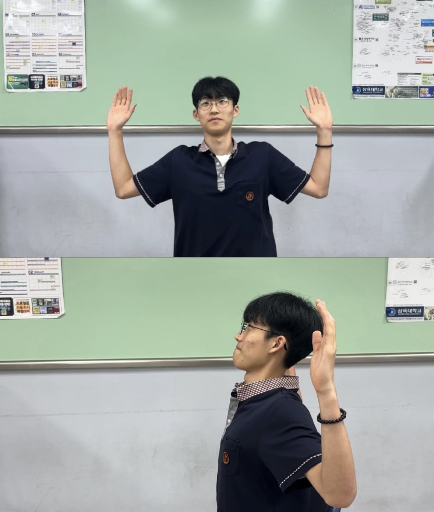
두 팔을 크게 돌려서 W자 모양으로 날개뼈 사이를 조여주세요.
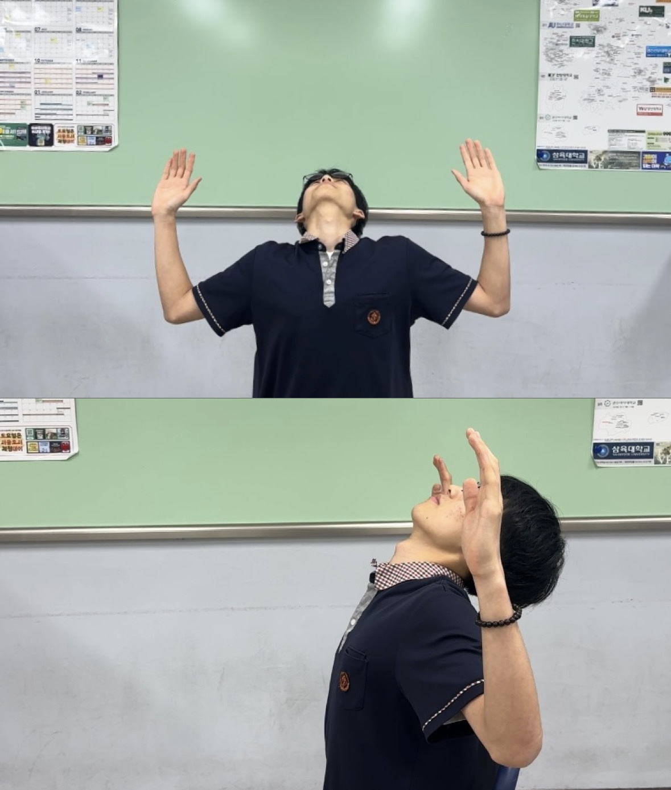
고개를 뒤로 천천히 젖혀주세요.
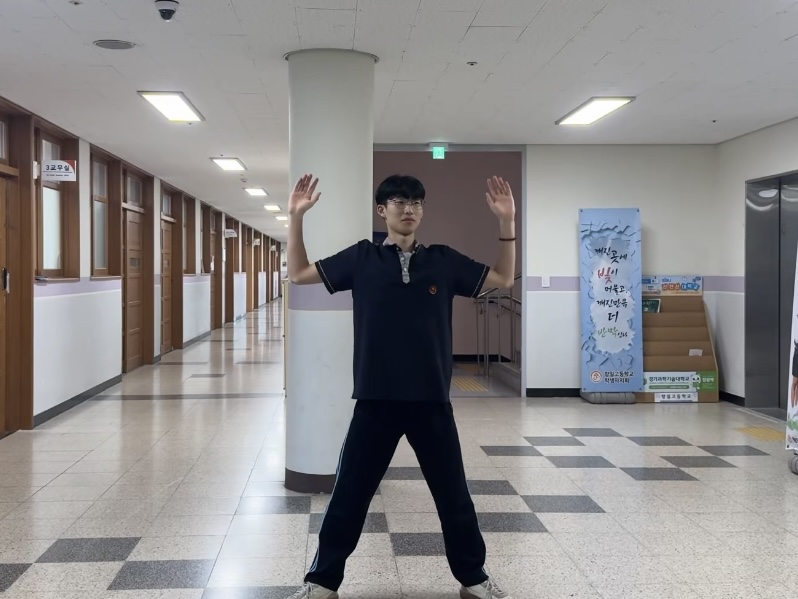
다리를 넓게 벌려 가슴을 열어줍니다.
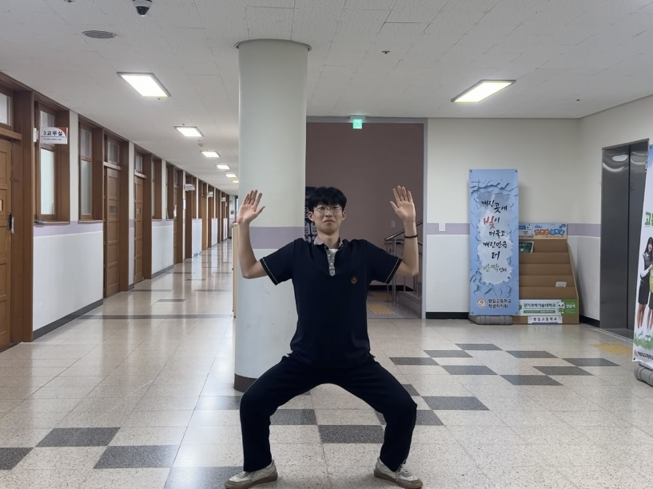
엉덩이를 뒤로 빼며 앉습니다.
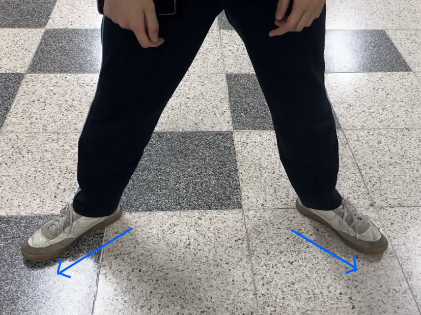
발끝은 바깥 방향입니다.
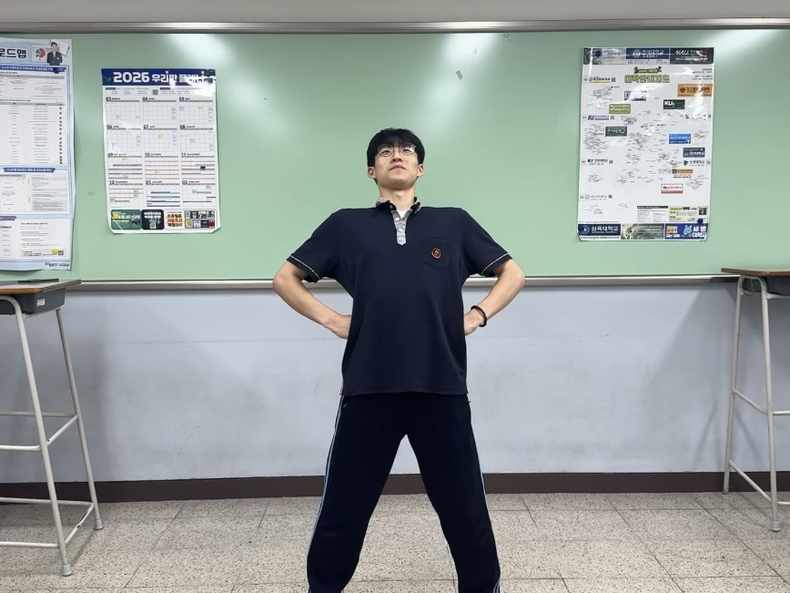
몸을 뒤로 젖혀줍니다.
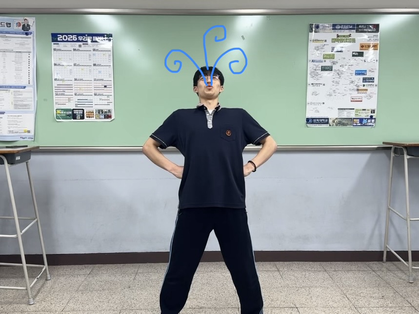
호흡을 유지합니다.
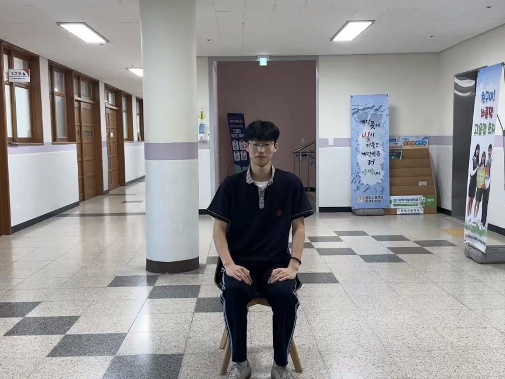
의자에 앉아 자세를 바로잡습니다.
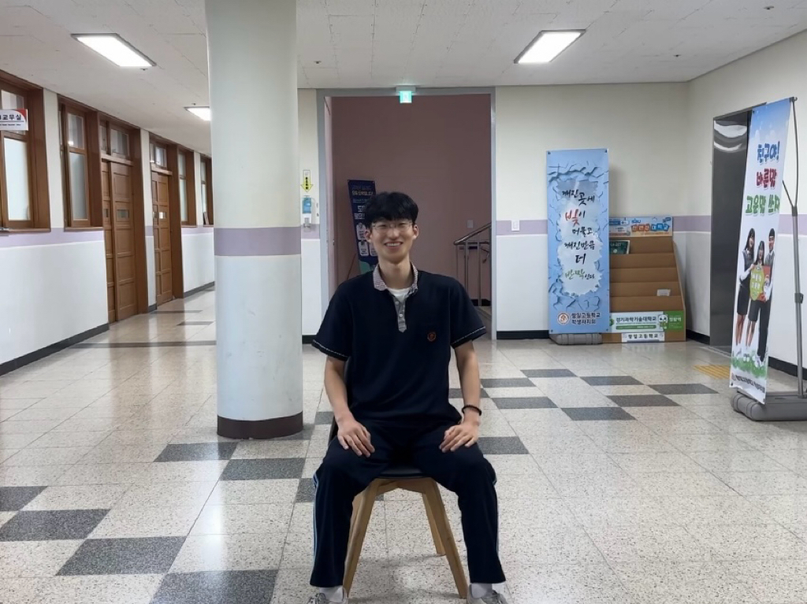
양발을 11자로 둡니다.
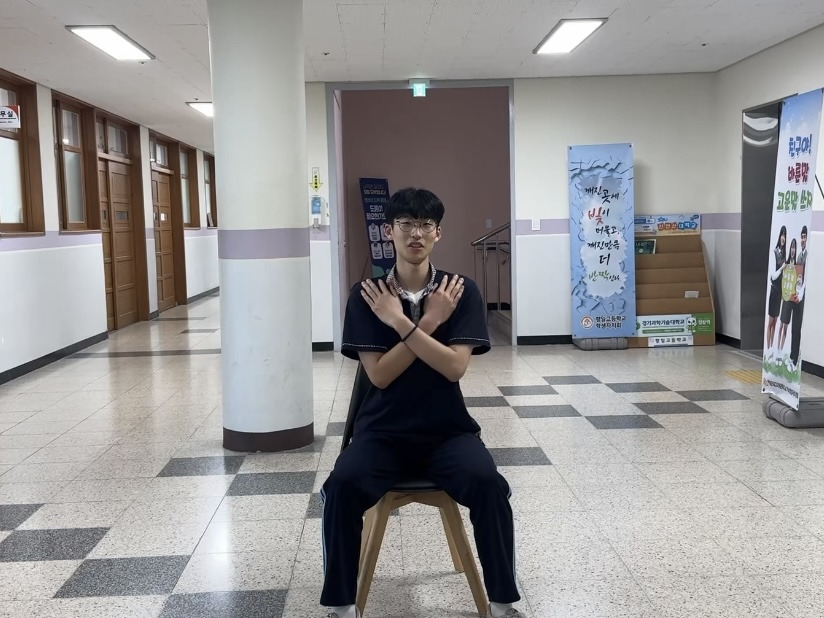
팔을 교차합니다.
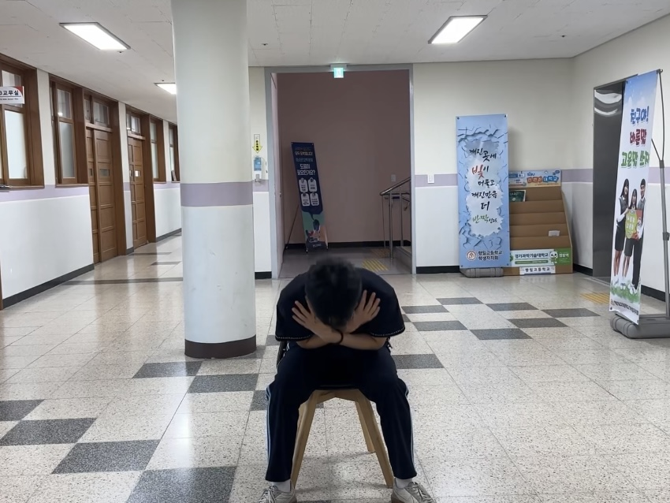
상체를 숙입니다.
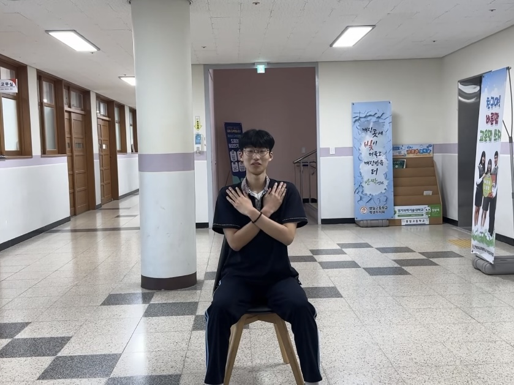
원래 자세로 돌아옵니다.
※ 자가 테스트는 본인의 상태를 간단히 점검해볼 수 있도록 구성된 참고용 도구입니다. 전문의의 진단을 대신할 수 없으니 정확한 진단과 치료는 의료진과 상의하시기 바랍니다.
자가 테스트는 본인의 상태를 간단히 점검해볼 수 있도록 구성된 참고용 도구입니다. 전문의의 진단을 대신할 수 없으니 정확한 진단과 치료는 의료진과 상의하시기 바랍니다.